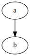

<attributes>
<awesome-version>${awesome.version}</awesome-version>
</attributes>Presentation

Keys
Press the arrow keys to navigate.
Press the
esckey to get an overview of your slides.Press the
skey to access speaker notes.Press
bor.to blank your current screen.
Attributes
Demo the usage of attributes.
Environment attributes
backend: revealjs
asciidoctor-version: 1.5.6.1
Custom attributes
Variables can be passed as custom attributes, initialized from a maven property (no maven filtering of .adoc files needed)
Awesome library version: 1.2.
Admonitions
Demo the display of icons as images or fonts.
| Note |
| Warning |
| Tip |
| Important |
| Caution |
Source code
Demo source code inclusion.
Inline source
public class HelloWorld { (1)
public static void main(String[] args) { (2)
// Prints "Hello, World" to the terminal window. Here is some very large comment that should cause an overflow
System.out.println("Hello, World");
}
}| 1 | The class name |
| 2 | The main method |
Referenced source
public static void main(String[] args) { (1)
System.out.println("Hello, World");
}| 1 | The main method |
| Also see the Javadoc. |
Diagrams
Demo the inclusion of semantic diagrams.
Graphviz

Plantuml

Sub-document
Demo the inclusion of sub-documents, with relative paths for images/icons/diagrams.
| Note |

Conclusion
| This is not the end ! |
You should also try out:
the HTML handbook version

the Maven site

the PDF handbook version